2019-06-06
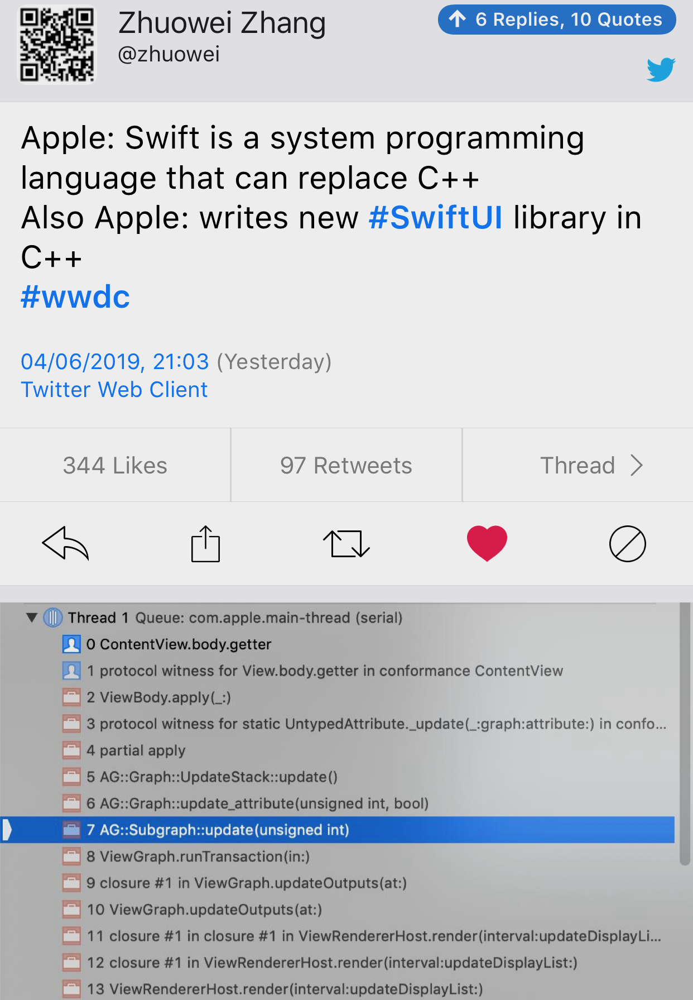
https://www.reddit.com/r/cpp/comments/bvf78q/myths/
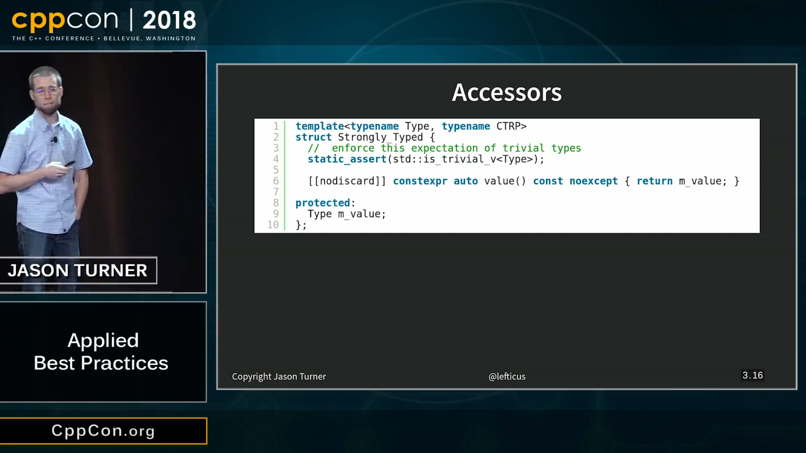
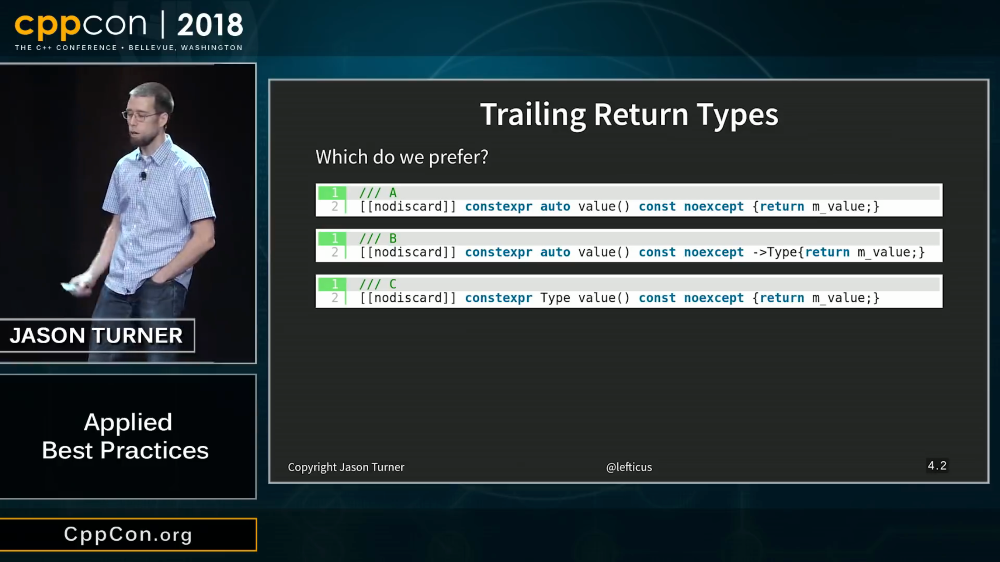
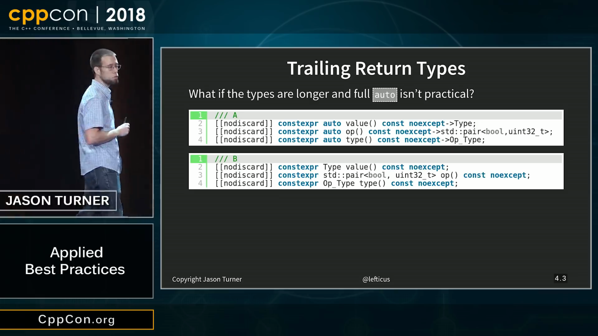
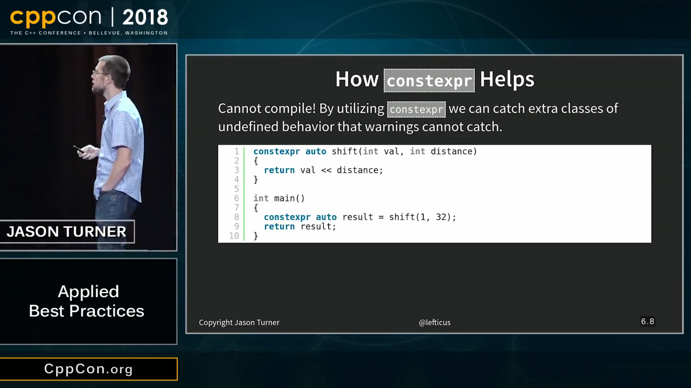
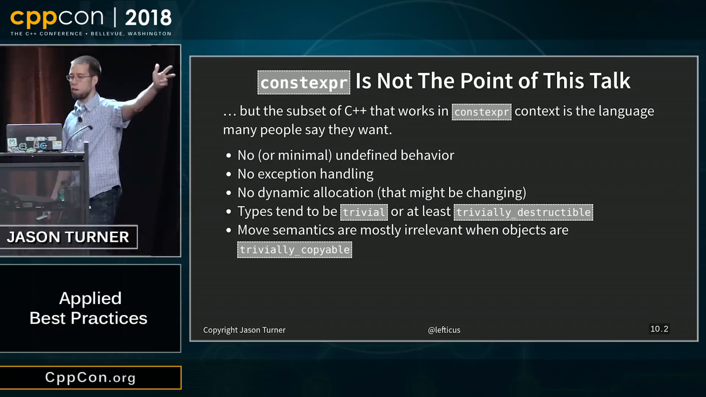
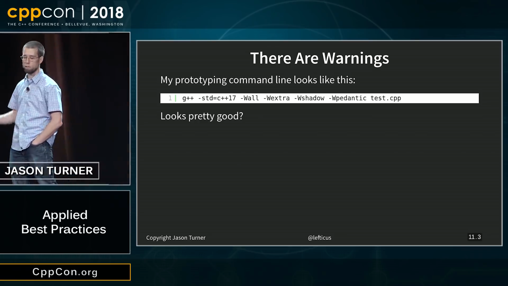
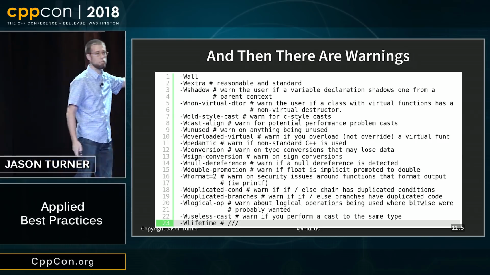
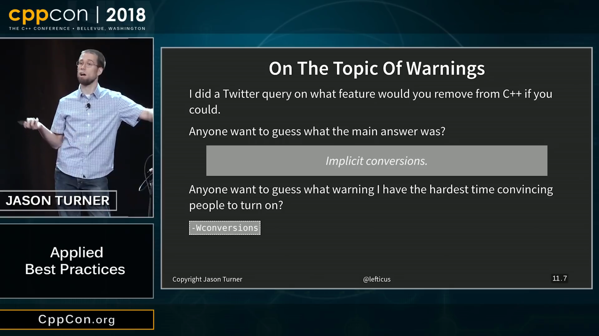
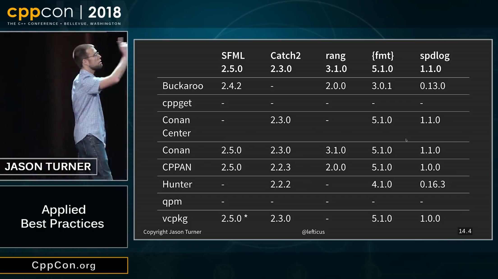
https://gist.github.com/beached/38a4ae52fcadfab68cb6de05403fa393
https://github.com/glebd/cppclub/blob/next/3rd/C%2B%2B%2520normal%2520operators.md
Hedley: A C/C++ header to help move #ifdefs out of your code
STXXL: Standard Template Library for Extra Large Data Sets.
The core of STXXL is an implementation of the C++ standard template library for external memory (out-of-core) computations, i. e., STXXL implements containers and algorithms that can process huge volumes of data that only fit on disks. While the closeness to the STL supports ease of use and compatibility with existing applications, another design priority is high performance.
https://www.fluentcpp.com/2018/09/04/function-poisoning-in-cpp/
#include <stdio.h>
#pragma GCC poison puts
int main() {
puts("a");
}
// error: attempt to use poisoned "puts"https://www.fluentcpp.com/2018/11/20/deprecating-and-deleting-functions-in-cpp/
[[deprecated("Replaced by fillmem, which has an improved interface")]]
void* memset(void*, int, size_t);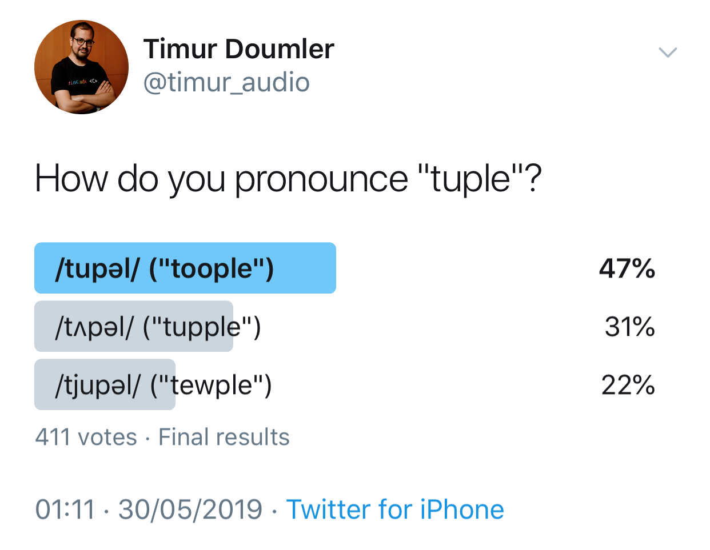
Cedric Guillemet @skaven_:
Any sufficiently advanced C++ codebase contains a Utils.cpp/h